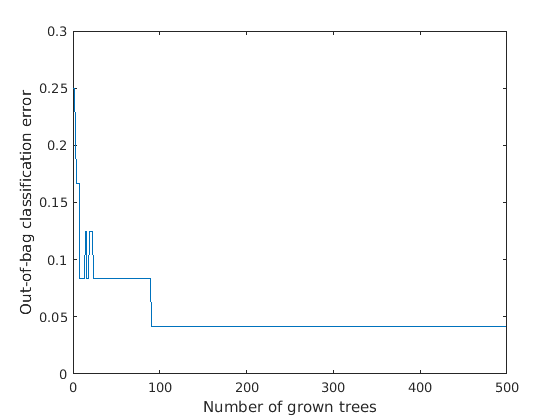
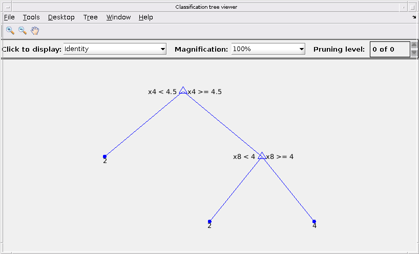
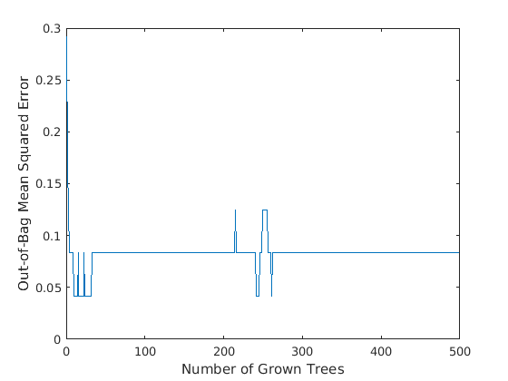

function call_generic_random_forests()
unix('wget http://archive.ics.uci.edu/ml/machine-learning-databases/breast-cancer-wisconsin/breast-cancer-wisconsin.data')
data_matrix = importdata('breast-cancer-wisconsin.data');
icol = size(data_matrix,2)
data_predictor = data_matrix(:,1:icol-1);
label = data_matrix(:,end);
BaggedEnsemble = generic_random_forests(data_predictor, label, 500, 'classification')
predict(BaggedEnsemble, [1000025,5,1,1,1,2,1,3,1,1])
wget: /opt/matlab/bin/glnxa64/libcrypto.so.1.0.0: no version information available (required by wget)
wget: /opt/matlab/bin/glnxa64/libssl.so.1.0.0: no version information available (required by wget)
wget: /opt/matlab/bin/glnxa64/libssl.so.1.0.0: no version information available (required by wget)
--2017-07-12 20:23:46-- http://archive.ics.uci.edu/ml/machine-learning-databases/breast-cancer-wisconsin/breast-cancer-wisconsin.data
Resolving archive.ics.uci.edu (archive.ics.uci.edu)... 128.195.10.249
Connecting to archive.ics.uci.edu (archive.ics.uci.edu)|128.195.10.249|:80... connected.
HTTP request sent, awaiting response... 200 OK
Length: 19889 (19K) [text/plain]
Saving to: ‘breast-cancer-wisconsin.data.10’
breast-ca 0%[ ] 0 --.-KB/s breast-cancer-wisco 100%[===================>] 19.42K --.-KB/s in 0.1s
2017-07-12 20:23:47 (137 KB/s) - ‘breast-cancer-wisconsin.data.10’ saved [19889/19889]
ans =
0
icol =
11
min_leaf_size =
5
BaggedEnsemble =
TreeBagger
Ensemble with 500 bagged decision trees:
Training X: [24x10]
Training Y: [24x1]
Method: classification
NumPredictors: 10
NumPredictorsToSample: 4
MinLeafSize: 1
InBagFraction: 1
SampleWithReplacement: 1
ComputeOOBPrediction: 1
ComputeOOBPredictorImportance: 0
Proximity: []
ClassNames: '2' '4' 'NaN'
ans =
24×1 cell array
'2'
'2'
'2'
'2'
'2'
'4'
'2'
'2'
'2'
'2'
'2'
'2'
'4'
'2'
'4'
'4'
'2'
'2'
'4'
'2'
'4'
'4'
'2'
'2'
Decision tree for classification
1 if x4<4.5 then node 2 elseif x4>=4.5 then node 3 else 2
2 class = 2
3 if x8<4 then node 4 elseif x8>=4 then node 5 else 4
4 class = 2
5 class = 4
idxvar =
1×0 empty double row vector
BaggedEnsemble =
TreeBagger
Ensemble with 500 bagged decision trees:
Training X: [24x10]
Training Y: [24x1]
Method: classification
NumPredictors: 10
NumPredictorsToSample: 4
MinLeafSize: 1
InBagFraction: 1
SampleWithReplacement: 1
ComputeOOBPrediction: 1
ComputeOOBPredictorImportance: 0
Proximity: []
ClassNames: '2' '4' 'NaN'
ans =
cell
'2'

  